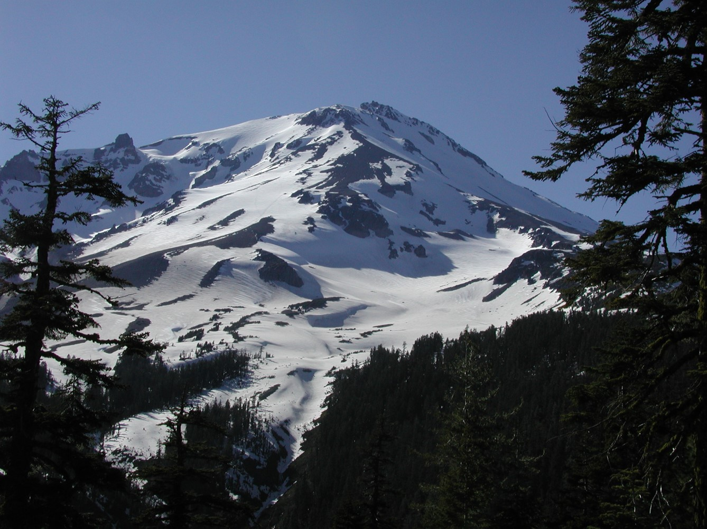
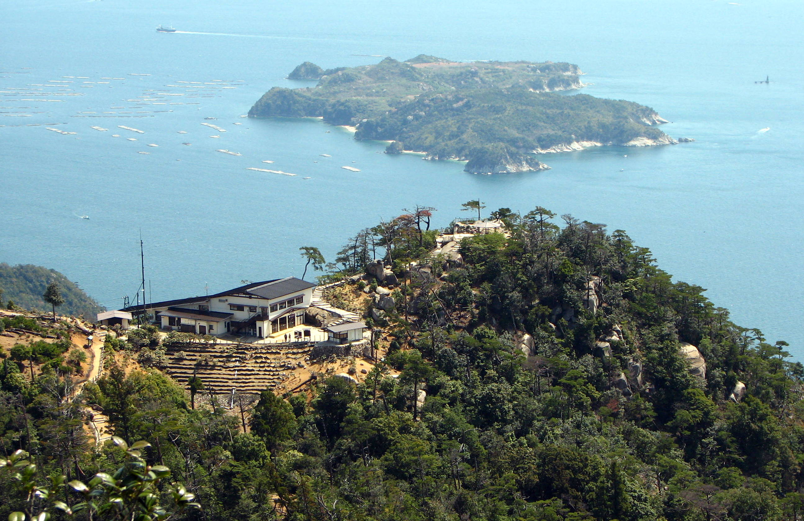

Executive Summary
Three hikers on California's Mount Shasta spent the night of August 30 on the mountain and were rescued the following morning. They had started for the summit at 3 a.m. and reached the top at 7 p.m., long past noon, the hour by which climbers on this mountain are told to turn around. The Siskiyou County Sheriff's Office said the group had planned the route and the packing list by asking Google Gemini, and that they carried less water and food than they needed.
What stands out is not whether the answer was wrong. A packing list built for an eight-hour climb holds up for as long as that premise holds. The question is where the information that would have shaken the premise was sitting at the time. The Mount Shasta Avalanche Center posts dated field reports throughout the climbing season, and one of them is dated August 30, the day the three went for the summit. That post said Clear Creek was still primarily dry ground and that recent climbers had gone without crampons or an ice axe, then attached a condition: the information holds only as long as you stay on the route. The three left the route.
Sections 1 through 3 follow facts confirmed by reporting and public records. Section 4, which reads the rescue as a problem of data timeliness, is this article's interpretation.
Key Numbers
Sources: Chicago Tribune (2026-09-03, original report) · TechCrunch (2026-09-05) · Siskiyou County Sheriff's Office statement · Mount Shasta Avalanche Center, 08-30-26 · USFS 2025 Climbing Ranger Report
8 hours to 2 days
Planned climb time, then what happened
Water and food were packed for the first figure
7 p.m.
Time they stood on the summit
Seven hours past the noon turnaround guidance
Dated Aug 30
Field report already public on summit day
It said Clear Creek was primarily dry ground
2 of 2
2025 Mount Shasta deaths, and where they happened
Both on Clear Creek, the route called easiest, in August and September
They Left at 3 a.m. and Arrived at 7 p.m.
The three came from Roseville, near Sacramento, and were described as novice hikers. They camped Saturday night, August 29, at around 8,400 feet, and set off for the summit at 3 a.m. the next morning carrying daypacks. It was meant to be a single day out. The route they chose, Clear Creek, climbs the eastern flank of Mount Shasta and has a reputation as the least technical way to the top.
Mount Shasta comes with an old piece of guidance: if you have not reached the summit by noon, turn around. Snow softens in the afternoon, rockfall picks up, and the weather shifts, so the rule exists to keep the descent inside daylight. The three stood on the summit at 7 p.m. That is seven hours past the hour they were supposed to turn back, and the sun went down soon after.
About an hour into the descent they lost the route and called the Siskiyou County Sheriff's Office dispatch for directions. They still ended up off the Clear Creek Route and inside Mud Creek Canyon. One of them fell and injured a knee, the group could go no further, and the three spent the night in the canyon's steep drainage. On the morning of Monday, August 31, U.S. Forest Service climbing rangers and search-and-rescue volunteers from the sheriff's office reached them, and after first aid the group walked out to the trailhead without serious injury.
A reputation as the easiest route does not translate into safety on this mountain. In its statement the sheriff's office wrote that "while the Clear Creek Route on Mount Shasta is not a technical mountaineering route, it still requires climbers to be physically fit and prepared for unforeseen circumstances, such as an injury, inclement weather or unplanned overnight stay," and added that "serious accidents and fatalities occur on the Clear Creek route when individuals become lost and wander into more dangerous terrain, such as the Mud Creek drainage." That drainage is where the three spent the night.
The Forest Service's 2025 Climbing Ranger Report tells the same story from another angle. Two people died on Mount Shasta that year, both on the Clear Creek route, and both deaths fell in August and September. The report notes that although Clear Creek is considered the mountain's easiest route, "poor weather and limited visibility can lead climbers off course and into steep, glaciated, and hazardous terrain." A difficulty grade describes how demanding the terrain is on a clear day. It says nothing about the state of that path on any given day.
Not a Wrong Answer, an Answer With No Date
After the rescue, the hikers told a sheriff's deputy they had "relied heavily on Gemini for information about the Clear Creek Route and advice on what to pack." Relaying that account, the sheriff's office said the group "were advised by Gemini to bring far less food and water than their group required, especially when their planned 8-hour ascent became a multiday ordeal." The office described the reliance on AI as a "critical misstep" and urged hikers to check with the rangers first: "It is always advisable to call the local USFS Mount Shasta ranger station ahead of your trip to ensure you have the most accurate information, and to never rely solely on AI for your trip planning."
One thing has to be stated plainly here. No outlet has published what the three actually asked Gemini or what Gemini actually replied. With no conversation log, there is no basis for quoting the chatbot as having named any particular figure. What is on the record is their account that they planned with the chatbot, and the sheriff's office's judgment that what they carried fell short. ABC News wrote in its story that it "has reached out to Google for comment," and as of this writing no response from Google is on the record.
So reading this as a story about a chatbot telling a lie puts the focus in the wrong place. Ask how much water an eight-hour day climb needs and the answer will land somewhere sensible. What collapsed was the premise the answer stood on, and the information that would have tested that premise was not inside the model.
Rayid Ghani, distinguished professor in machine learning at Carnegie Mellon University, told the BBC last year: "It doesn't know the difference between travel advice, directions or recipes. It just knows words. So, it keeps spitting out words that make whatever it's telling you sound realistic." The BBC added a line of its own: since AI programs present their hallucinations and factual responses the same way, users often cannot tell which is which. Ghani was describing the line between fact and hallucination. There is a second thing the same screen fails to distinguish. When the answer is from.
A chatbot answer is always specific. So many liters of water, so many energy bars, so many hours on the trail. What is not printed beside those numbers is the date they are good as of. The qualifier a person would have attached without thinking, that it has been a while since they were up there and they do not know what has fallen since, is missing entirely. How confident an answer sounds and how recent it is have nothing to do with each other, yet on the screen the two look identical.
The Mountain Keeps a Record That Gets Updated
There is a reason the sheriff's office told people to call the ranger station. Conditions on Mount Shasta are written down in a public place. Through the climbing season the Mount Shasta Avalanche Center posts a page titled General Conditions & Climbing Information, with the date sitting in the title. 08-24-26, 08-30-26, 09-04-26: the link alone says when it was written.

A new one was up on August 30, the day the three started for the summit. On Clear Creek it read: "As of Sunday August 30, the route is primarily dry ground and most recent climbers have been going without microspikes, crampons, or an ice axe." It went on: "Under general late-summer, snow-free conditions, trekking poles are highly useful, helmets are a good safety measure in the 'headwall' section above Mushroom Rock at a minimum, and mini trail gaiters can help keep loose gravel out of your boots." At the end of the paragraph came the condition: "Remember that this information is granted you stay on the route. If you leave the main route or explore other parts of the mountain, bring a full mountaineering kit."
The weather section of that same post was already flagging the week ahead. "For this week (8/31 – 9/4), impactful weather is expected," it said, and the incoming storm "has the potential to significantly change route and climbing conditions moving forward – such as slick, icy surfaces on previously dry ground." The storm arrived after the three were off the mountain, so it has no direct bearing on this rescue. What remains is that while they were up there, sentences describing the mountain's next several days were already published.
The forecast held. The post dated September 4, five days later, records the change. The Old Ski Bowl weather station at 7,600 feet "recorded over 2 inches of water since Tuesday," and with snow levels above roughly 8,500 feet "the mountain likely received 12 to 18 inches of snow above 10,000 feet," an estimate rather than a measurement. On Clear Creek: "New snowfall has resulted in slick and potentially icy surfaces on previously dry ground. Anticipate slip and fall potential." Water was available only at the Sierra Club Alpine Hut, so climbers were told to expect to melt snow elsewhere on the mountain and to bring extra stove fuel. The route that on August 24 let you leave the ice axe behind now came with a flat requirement: "A full mountaineering kit is required – an ice axe, crampons, helmet and the ability to use them well."
The September 4 post carries this sentence as well. "If you are planning a trip this weekend or were intending to climb Clear Creek under mostly snow free conditions, it would be prudent to consider moving your trip to a future date." That is a sentence telling the owner of a plan to throw the plan away, and only a dated record can write it. Only something that knows when its own information stopped holding can speak that way.
The updates are not daily. In August 2026 the post went up six times, on the 6th, 14th, 18th, 21st, 24th and 30th. The ranger stations are "typically open Monday through Friday from 8 to 4:30 PM." The current state of the mountain is closer to a logbook someone fills in after walking the route than to a live stream. It is still far more recent than weights frozen at the end of training, and above all the date of writing is attached to the title. The Chicago Tribune, which broke this story, printed the ranger station's phone number in its closing line.
When an Answer Turns Into Water and Food
This is not the first time. One of the cases the BBC collected in September 2025 has nearly the same shape as this one. Dana Yao and her husband used ChatGPT to plan a hike to the top of Mount Misen on the Japanese island of Itsukushima, and they set off at 15:00 to reach the summit in time for sunset, exactly as the chatbot had instructed. Then, in her words: "ChatGPT said the last ropeway down was at 17:30, but in reality, the ropeway had already closed. So, we were stuck at the mountain top." Nothing was invented and no arithmetic was wrong. The timetable had changed in the meantime.

In the same article, Miguel Angel Gongora Meza, founder and director of Evolution Treks Peru, described overhearing two tourists in a rural Peruvian town as they discussed visiting the Sacred Canyon of Humantay on their own. His account: "They [showed] me the screenshot, confidently written and full of vivid adjectives, [but] it was not true. There is no Sacred Canyon of Humantay!" The name welded together two unrelated places, and one tourist had already paid "nearly $160" to reach a rural road near Mollepata with no guide and no destination. Gongora Meza warned that following a program "which combines pictures and names to create a fantasy" can leave a traveler "at an altitude of 4,000m without oxygen and [phone] signal." The case is logged in the AI Incident Database as incident 1636, and even the entry title stops short of naming which chatbot produced the itinerary.
Reporting also describes hikers near Vancouver in 2025 who consulted ChatGPT, walked into lingering snow in early May wearing sneakers, and had to call for rescue. That account comes secondhand from another outlet, so the details need further checking. The four failures differ from one another. Misen was a stale timetable, Peru was a place that does not exist, Vancouver missed the season, and Shasta never accounted for what happens once an eight-hour premise breaks. Seen from where the user sits, though, all four look alike. The answer came out specific, and nothing on the screen said when or where it came from.
Among the dimensions used to measure data quality, timeliness has been studied as long as accuracy or completeness. The same value is worth different amounts depending on when it was observed. In practice, timeliness is usually treated as a matter of convenience. Looking at last month's revenue dashboard rarely hurts anyone.
Its character changes the moment an answer is converted into physical resources: liters of water, packets of food, hours of daylight. The water in a pack cannot be topped up later, and there is no way to receive a correction notice halfway up a mountain. At that point timeliness stops being a convenience and becomes a safety condition. What set the weight on those three backs was, in the end, a sentence.
So there is a question waiting for each side. For the people using these answers, the habit worth building is to ask what date an answer is good as of before turning it into resources. For the people building them, the question is whether an output can carry the source of its evidence and the time of its observation alongside the answer. It is not a hard ask. The avalanche center already does it by putting the date in the title.
Editor's Note
One blank Pebblous runs into often while diagnosing enterprise data is the observation time. The value is filled in, the moment it was measured is not, and so nobody can judge whether the value is safe to use right now. While the table sits on screen the blank is easy to miss. It comes back as a cost the moment someone decides something with that value. The distance between choosing a pack weight on a mountain and setting a budget at a company is shorter than it looks.
Thank you for reading this far. The sequence of events was checked against the Chicago Tribune, which broke the story, TechCrunch, and the ABC News report that carries the sheriff's statement at greatest length. Field conditions were read directly from the Mount Shasta Avalanche Center posts dated August 30 and September 4, and from the U.S. Forest Service 2025 Climbing Ranger Report. The Misen and Peru cases come from the BBC. If your team already attaches an observation time to AI answers, we would like to hear what form it takes.